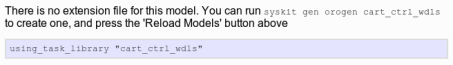
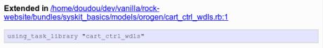
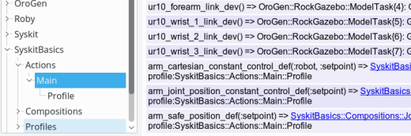

Deployment
Where are we ? A few things are missing before we can actually run the network we just created. Mainly related to giving names to actual components, providing proper configurations and registering an action so that we can tell Syskit to start our network.
- Component deployment
- Component configuration
- Building the system's action interface
- Running the simulation and app
Component deployment
When declared in oroGen files, components are an encapsulation of a function. At this stage, a "component" is really just a class which embeds code in a specific, normalized way, and that has defined inputs, outputs and configuration parameters.
To actually run a component, one needs to declare how it will be supported by the operating system's runtime ressources (how the components are mapped to processes and threads), and when the component will be processing its data (periodically, triggered by its inputs). Moreover, the component is given a name so that it can be discovered by Rock's inspection tools, and so that its outputs can be found in the data logged at runtime.
All oroGen components have a default deployment scheme of one component per
process. The triggering mechanism does not have a default, but the
port_driven scheme (where the component is triggered whenever data is
received on its inputs) is commonly used. If you look into the
cart_ctrl_wdls.orogen file in control/orogen/cart_ctrl_wdls, you would see
that it is indeed what the package components uses.
One usually starts with the defaults defined in the oroGen file. We therefore only have left to give a name to the components Syskit is using. This is done in the robot's config file with:
Robot.requires do
Syskit.conf.use_gazebo_world('empty_world')
require 'syskit_basics/models/profiles/gazebo/arm_control'
Syskit.conf.use_deployment OroGen.cart_ctrl_wdls.CartCtrl => 'arm_pos2twist'
Syskit.conf.use_deployment OroGen.cart_ctrl_wdls.WDLSSolver => 'arm_twist2joint'
Syskit.conf.use_deployment OroGen.robot_frames.SingleChainPublisher => 'arm_chain_publisher'
Syskit.conf.use_ruby_tasks SyskitBasics::Compositions::ArmCartesianConstantCommandGenerator => 'arm_constant_setpoint'
Syskit.conf.use_ruby_tasks SyskitBasics::Compositions::JointPositionConstantGenerator => 'joint_position_setpoint'
end
Now that we've required our toplevel profile in the robot configuration file,
we can inspect our app using the IDE by simply providing the -rgazebo flag.
Only new files, not yet required by the config file, must be specified on the
command line.
Component configuration
Configuration of components in a Syskit system is split into two parts:
- "dynamic" configuration: parameters that cannot be known at design time, will be changed each time an action is started, or are to be kept consistent system-wide (such as e.g. information that can be extracted from the SDF model). These are represented as task arguments. This is how the setpoint of the cartesian controller is handled.
- "static" configuration: parameters that are known at design time. Most of the algorithm parameters fit into this category. These are the subject of this section.
Static configuration of oroGen components
The static configuration is stored within YAML files in config/orogen/. Each
file is named after the component model that is configured, so for instance
config/orogen/cart_ctrl_wdls::WDLSSolver.yml stores the configuration of all
components under that name. Each file can contain multiple configurations
within sections, but for now we will only use the default configuration,
which is the one that is loaded by default unless specified otherwise.
Let's generate configuration file templates for the components we are using. The files are generated with the default configuration exposed by the components.
$ syskit gen orogenconf cart_ctrl_wdls::WDLSSolver
create config/orogen/
create config/orogen/cart_ctrl_wdls::WDLSSolver.yml
$ syskit gen orogenconf cart_ctrl_wdls::CartCtrl
exists config/orogen/
create config/orogen/cart_ctrl_wdls::CartCtrl.yml
$ syskit gen orogenconf robot_frames::SingleChainPublisher
exists config/orogen/
create config/orogen/robot_frames::SingleChainPublisher.yml
The generators create a configuration file for each component class, containing the default value of every property. Let's look at them one by one, to see what needs to actually be configured.
-
cart_ctrl_wdls::WDLSSolver. There are robot model parameters as well as tip and root. The former should be extracted from the SDF configuration, but the tip and root have to be set. The only algorithm parameter that does not seem to have a sane default is thelambdaparameter. The documentation mentions 0.1 has a known-good parameter for some arm, let's pick that and keep in mind that it might be wrong.The root and tip in our case are the base and hand of the robot. So
rootshould beur10::baseandtipshould beur10::wrist_3. One can find this out by looking at the SDF file. Alternatively, the chain can be inspected using therock-transformertool:The parameters that have to be set should look like the following. Better keep the rest, as it provides documentation about which parameters are available.
root: 'ur10::base' tip: 'ur10::wrist_3' cart_ctrl_wdls::CartCtrl. The one parameter that is probably best changed is the max output. The component's designer decided to pickRigidBodyStateto represent a twist, which means that we only need to update the velocity and angular velocity fields. Let's set0.1in linear and2.degin angular (the.degsuffix will convert a degree value in radians).-
robot_frames::SingleChainPublisheronly has robot model that we will extract from the SDF model, and the tip/root parameters that have to be setchain: root_link: 'ur10::base' tip_link: 'ur10::wrist_3'
Note one might want at some point to use a task argument for the tip and
root parameters of SingleChainPublisher and WDLSSolver, to ensure
consistency between the components.
Dynamic and system-wide configuration
The robot model need to be extracted from the SDF and passed to the components that require it. The convention when integrating SDF models in Syskit is to extract the relevant parts of the XML model as an XML string and provide only this to the components. This centralizes the difficulty of resolving the relationships between SDF models, and provides flexibility to tune the model before it is passed to the component.
Advanced Mechanisms involved in SDF file loading in Rock
The difficulty when loading a SDF file is that SDF allows files to refer to
each other through the include mechanism, which can be used in a
world as well as a
model tag. Within
Gazebo, the include tags are resolved by searching through the
GAZEBO_MODEL_PATH environment variable. The SDF integration in Syskit automatically
augments this environment variable with the models/sdf/ folders found within the app search path.
In order to avoid complexities tied to this mechanism, the preferred way to integrate SDF in components in a Syskit system is to provide the XML model as a string instead of as a file. This ensures that Syskit and the components share the same model.
The use_sdf_model statement stores the model object on the profile object.
The most natural way would be to pass the Base profile, that represents the
robot model, as a robot argument to the control compositions until the oroGen
components. We can then make sure that argument is passed to the oroGen components
themselves.
We've already seen how to forward a composition argument to its child, so let's apply that to the compositions:
In models/compositions/arm_cartesian_constant_control_wdls.rb
class ArmCartesianConstantControlWdls < Syskit::Composition
# The robot model that is to be used
#
# This must be the enclosing profile object that has the use_sdf_model call
#
# @return [Profile]
argument :robot
...
add(ArmCartesianControlWdls, as: 'control').
with_arguments(robot: from(:parent_task).robot)
end
and in models/compositions/arm_cartesian_control_wdls.rb
class ArmCartesianControlWdls < Syskit::Composition
# The robot model that is to be used
#
# This must be the enclosing profile object that has the use_sdf_model call
#
# @return [Profile]
argument :robot
...
add(OroGen.cart_ctrl_wdls.WDLSSolver, as: 'twist2joint_velocity').
with_arguments(robot: from(:parent_task).robot)
add(OroGen.robot_frames.SingleChainPublisher, as: 'joint2pose').
with_arguments(robot: from(:parent_task).robot)
end
Since the ArmControl profile is specific to the gazebo robot, we can inject
the relevant robot in the profile directly:
define 'arm_cartesian_constant_control',
Compositions::ArmCartesianConstantControlWdls.
use(Base.ur10_dev).
with_arguments(robot: Base)
We need to modify the oroGen component models to use the robot argument.
Since oroGen components are auto-generated by Syskit, there's a special
mechanism to allow modifying the generated classes after the fact. When Syskit
loads an oroGen package, and after it has created the task classes, it will attempt to
load a file named like the project in models/orogen/. In the case of the
robot_frames project, this would be models/orogen/robot_frames.rb.
In the IDE, when displaying a task model under the OroGen namespace, a project
that has no associated extension file in models/orogen/ has the following message:

Let's do exactly that
$ syskit gen orogen cart_ctrl_wdls
create models/orogen
create test/orogen
create models/orogen/cart_ctrl_wdls.rb
create test/orogen/test_cart_ctrl_wdls.rb
$ syskit gen orogen robot_frames
exists models/orogen
exists test/orogen
create models/orogen/robot_frames.rb
create test/orogen/test_robot_frames.rb
After hitting the IDE's reload button, the IDE displays the path to the extension file:

Let's edit first models/orogen/cart_ctrl_wdls.rb. There is one Syskit.extend_model
statement per task model in the project, but we're currently only interested in
the WDLSSolver task. Let's add the robot argument, and tune the
configure method that is described in the template to forward the model on to
the task's properties.
Syskit.extend_model OroGen.cart_ctrl_wdls.WDLSSolver do
argument :robot
def configure
super # call super as described in the template
properties.robot_model = robot.sdf_model.make_root.to_xml_string
properties.robot_model_format = :ROBOT_MODEL_SDF
end
end
and in models/orogen/robot_frames.rb:
Syskit.extend_model OroGen.robot_frames.SingleChainPublisher do
argument :robot
def configure
super # call super as described in the template
properties.robot_model = robot.sdf_model.make_root.to_xml_string
properties.robot_model_format = :ROBOT_MODEL_SDF
end
end
Building the system's action interface
A Syskit application exports functionality to the outside world as actions. The only thing we will see about actions in this section is that they have a name, arguments and a lifetime. They either finish by themselves – if they have a goal – or run forever until they are "dropped" by the app's user.
What we will see here is how to export the profile definition as an action on the robot's action interface so that we can finally start it.
Every robot have a 'main' interface that is setup in the robot configuration
file. Syskit profiles are added in the action interface there, so that their
definitions are exported as an action with a _def suffix.
Let's modify the actions block in config/robots/gazebo.rb to have:
Robot.actions do
use_profile SyskitBasics::Profiles::Gazebo::Base
use_profile SyskitBasics::Profiles::Gazebo::ArmControl
end
Note: the profile is available in the actions block because we've loaded it in the requires block
After modifying the config file, the IDE needs to be quit and started again. We
can then look at the Main interface and see that it indeed has _dev actions for
the devices in Base, and _def actions for the definitions in ArmControl.

Let's now run it
Running the simulation and app
Start the simulation with
rock-gazebo empty_world
Once started, the simulation can stay running regardless of whether the Syskit app itself gets restarted. You can then start the app using the IDE, and send the command through the Syskit shell. The following video show you the process. Its goal is to give you a feeling for Syskit's runtime workflow. Detailed explanations will come later in the runtime overview